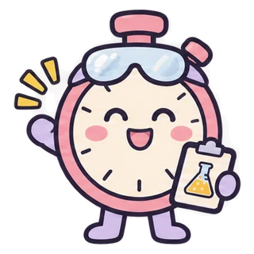

CHEM 3A · Dr. Dan
Station Rotation Lab Practical Practice
Get ready for the lab practical: read the glassware, crunch the data, name the equipment.

- Pick a mode below.
- Answer with a number, unit and the right sig figs. Smart typing: 3.2E-5 → 3.2×10⁻⁵, H2O → H₂O.
- Stuck? In Practice, tap Hint (twice for the setup) or Show answer. Reference and Calculator are at the top right.
1Pick your answer sheet
2Timer
- Every station shows Versions A, B and C. Only answer your version.
- When time is up, pens down and rotate. You get time at the end to finish your work.
- 10 stations: 8 of your labs, plus 2 general stations (equipment names and measurements). The labs rotate, so every lab comes up as you take more mocks.
- Answers are free response: numbers, units and sig figs all count.
1Which labs? Pick one or more.
Level
Practice
Pick a lab above to get your first question.
PhET Lab Bench
Simulations by PhET Interactive Simulations, University of Colorado Boulder1Pick a simulation It opens right here with a few short tasks to check.
Virtual Lab
Drag items onto the equipment, or tap an item and then tap where it goes.1Pick a lab to run You do the lab on screen, then the math.
Level
This game collects anonymous practice stats (no names or student IDs) to help plan new lessons.
Game design and chemistry by ItsDrDan.
I used AI (Claude by Anthropic) to help write the code, the way I hope you'll use it: as a tool, while checking every answer and understanding the chemistry and math behind it.
Progress & achievements
Lab Rookie0 XP
0Correct
0Tried
0Mock practicals
–Best mock score
XP: +10 correct, +5 first try, +5 with no help. Mock practicals earn 1 XP per point. A question type is solid when your latest try was right the first time with no hint; types you missed or needed help on come back for a second look. Progress is saved on this device.
Learn with Dr. DanLab practical review videos
ItsDrDan · Fresno City College · Practice only, nothing is graded